Econometrics I
TA Christian Alemán
Session 2: Tuesday 1st, February 2022
Activity 1: Basic Matrix Operations
A simple structural national income model
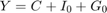
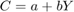
Boring solution:
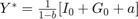
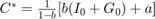
Using Linear Algebra: Transform to 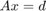 form
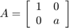 , 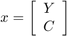 , 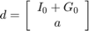
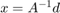
% Housekeeping clear all close all clc % par.b = 0.5; % Propensity to consume par.a = 1; % Basic Consumption par.I = 0; % Investment par.G = 0.2; % Goverment Spending A_mat = [1,-1;-par.b,1]; d_vec = [par.I+par.G; par.a]; % Boring Solution: Y_an = 1/(1-par.b).*(par.I+par.G+par.a); C_an = 1/(1-par.b).*(par.b*(par.I+par.G)+par.a); disp([]) opt.v_names = {'Y','C'}; c_table = array2table([Y_an,C_an],'VariableNames',opt.v_names); disp('Boring Solution') disp('') disp(c_table) % Using Linear Algebra: x = inv(A_mat)*d_vec; x = A_mat\d_vec; c_table = array2table(x','VariableNames',opt.v_names); disp('Solution with linear algebra') disp('') disp(c_table)
Boring Solution
Y C
___ ___
2.4 2.2
Solution with linear algebra
Y C
___ ___
2.4 2.2
Activity 2: Inverses and their properties
Define the inverse of matrix 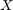 as 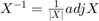
Such that 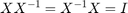
-The inverse is a derived matrix that may not exist.
-The inverse of a matrix is defined if:
- is a square matrix and
- is is said to be nonsingular. Non-singularity: 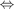 squareness and linear independence
- More in Non-Singularity:
- A singular matrix has determinant equal to zero
- A nonsingular matrix hasa non-zero determinant.
2.1 Linear independence
Let be matrix 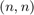
and 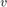 a column vector 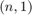 collecting the 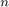 row vectors in
Linear independence requiers that the only set of scalars 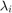 which can satisfy:
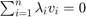
are 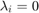 for all 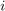
Example 1:
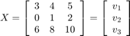
the rows are not linearly independent because 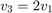
(i.e) 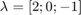
% A Singular Matrix:
X_mat = [3,4,5;0,1,2;6,8,10];
X_mat(3,:)-2.*X_mat(1,:)
ans =
0 0 0
A non-singular matrix:
Y_mat = magic(3);
2.2 Eigenvalues and Determinants
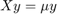
Let the 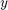 value that solves the above system of equations be called an eigenvector
and 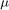 be the respective eigen value
Define the trace of a Matrix as:

Define the determinant of a Matrix as:
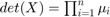
Example 2:
% Using Matlab In-built disp('Using Matlab In-Built') disp([det(X_mat),det(Y_mat)]) % Using our function disp('Using Our Function') disp([my_det(X_mat),my_det(Y_mat)])
Using Matlab In-Built
0 -360
Using Our Function
0 -360.0000
2.3 The rank of a matrix
The (row) rank of a matrix is defined to be the maximum number of linearly independent rows.
i.e the rank of a matrix is the number of non-zero row in the row-echelon form of the matrix.
Redefining Conditions for the existence of an inverse
The inverse of a squaren matrix exists if and only if it is of full rank.
Example 3:
% Use matlab in-built function disp('Using Matlab In-Built') disp([rank(X_mat),rank(Y_mat)]) % Use our function disp('Using Our Function') disp([my_rank(X_mat),my_rank(Y_mat)])
Using Matlab In-Built
2 3
Using Our Function
2 3
2.4 The inverse of a Matrix (if it exists)
Use matlab in-built function
disp(inv(Y_mat)) disp(my_inv(Y_mat))
0.1472 -0.1444 0.0639 -0.0611 0.0222 0.1056 -0.0194 0.1889 -0.1028
Use our function
disp(my_inv(Y_mat))
0.1472 -0.1444 0.0639 -0.0611 0.0222 0.1056 -0.0194 0.1889 -0.1028
2.5 Symetric and Idempotent Matrices
2.5.1 Symetry
A square matrix that satisfies the property 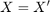 is said to be symmetric.
2.5.2 Idempotent
A square matrix is idempotent if 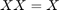
If the matrix is symetric it follows that 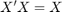
Idempotent matrices have that 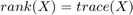
Idempotent matrices are very important in econometrics: Let be an (n,k) matrix of data of 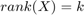. Then the matrix 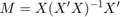
Example 4:
The data generating process
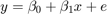 Where 
% Number of observation rng(4567) par.n = 500; % Simulate x par.mean_x = 4; par.variance_x = 2; par.variance_e = 0.1; x = par.mean_x +sqrt(par.variance_x).*randn(par.n,1); % Simulate error e = 0 + sqrt(par.variance_e).*randn(par.n,1); % Simulate Data Generating Process: par.beta0 = 2; par.beta1 = 0.5; y = par.beta0 + par.beta1.*x +e; % Show that $M=X(X'X)^{-1}X'$ is idempotent M = x*inv(x'*x)*x'; M_new = M*M; I = (M-M_new).^2; disp('Total Squared Diference:') disp(sum(I,'all'))
Total Squared Diference: 6.8891e-32
Activity 3: Least Squares Estimation:
Estimate the above model using Least Squares
Example 5:
Least Squares Estimate our function
vars = ols_esti(y,[ones(par.n,1) x]);
opt.v_names = {'\beta_{0}','\beta_{1}'};
c_table = array2table(vars.beta_hat','VariableNames',opt.v_names);
disp('OLS estimates: Our Function')
disp(c_table)
% Least Squares Estimate In-Built function
vars.beta_matlab = regress(y,[ones(par.n,1) x]);
c_table = array2table(vars.beta_matlab','VariableNames',opt.v_names);
disp('OLS estimates: In-built')
disp(c_table)
% figure
figure(1)
hold on
plot(x,y,'ko','MarkerFaceColor','k')
plot(x,vars.y_hat,'b-','linewidth',1.1)
xlabel('$x$','fontsize',17,'interpreter','latex')
ylabel('$y$','fontsize',17,'interpreter','latex')
here
OLS estimates: Our Function
\beta_{0} \beta_{1}
_________ _________
1.9818 0.51008
OLS estimates: In-built
\beta_{0} \beta_{1}
_________ _________
1.9818 0.51008
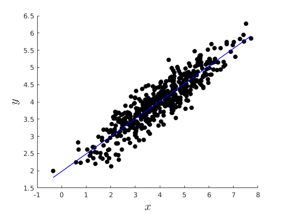 Activity 4: Using the Symbolic toolbox to do stuff
In this case to find the inverse of a matrix
My take(purely personal): AVOID using symbolic stuff, not helpfull at all.
syms a11 a12 a13 b21 b22 b23 c31 c32 c33 A_m = [a11,a12,a13;b21,b22,b23;c31,c32,c33]; A_inv = inv(A_m); disp(A_inv) syms a A_m = [sym(1),sym(0),sym(0);sym(0),sym(1),sym(0);sym(0),sym(0),a]; A_inv = inv(A_m); disp(A_inv)
[ (b22*c33 - b23*c32)/(a11*b22*c33 - a11*b23*c32 - a12*b21*c33 + a12*b23*c31 + a13*b21*c32 - a13*b22*c31), -(a12*c33 - a13*c32)/(a11*b22*c33 - a11*b23*c32 - a12*b21*c33 + a12*b23*c31 + a13*b21*c32 - a13*b22*c31), (a12*b23 - a13*b22)/(a11*b22*c33 - a11*b23*c32 - a12*b21*c33 + a12*b23*c31 + a13*b21*c32 - a13*b22*c31)] [-(b21*c33 - b23*c31)/(a11*b22*c33 - a11*b23*c32 - a12*b21*c33 + a12*b23*c31 + a13*b21*c32 - a13*b22*c31), (a11*c33 - a13*c31)/(a11*b22*c33 - a11*b23*c32 - a12*b21*c33 + a12*b23*c31 + a13*b21*c32 - a13*b22*c31), -(a11*b23 - a13*b21)/(a11*b22*c33 - a11*b23*c32 - a12*b21*c33 + a12*b23*c31 + a13*b21*c32 - a13*b22*c31)] [ (b21*c32 - b22*c31)/(a11*b22*c33 - a11*b23*c32 - a12*b21*c33 + a12*b23*c31 + a13*b21*c32 - a13*b22*c31), -(a11*c32 - a12*c31)/(a11*b22*c33 - a11*b23*c32 - a12*b21*c33 + a12*b23*c31 + a13*b21*c32 - a13*b22*c31), (a11*b22 - a12*b21)/(a11*b22*c33 - a11*b23*c32 - a12*b21*c33 + a12*b23*c31 + a13*b21*c32 - a13*b22*c31)] [1, 0, 0] [0, 1, 0] [0, 0, 1/a]
%------------------------------------------------------------------------- % Adjoint Function function AD = my_adjoint(X) %{ This function computes the adjoint matrix of a square matrix Input: X: Square matrix Output: D: adjoint of the matrix X %} [N,M] = size(X); if N~=M error('Input matrix not a square matrix.') end C = NaN(N,N); for ki=1:N for kj = 1:N % Compute the cofactor matrix C(ki,kj) = (-1)^(ki+kj)*det(X([1:ki-1 ki+1:N],[1:kj-1 kj+1:N])); end end AD = C'; end %------------------------------------------------------------------------- % Inverse function function [inv_mat] = my_inv(X) %{ This function computes the Inverse of a square matrix if it exists Input: X: Square matrix Output: inv_mat: Inverse of the matrix X %} [N,M] = size(X); if N~=M error('Input matrix not a square matrix.') end if rank(X)~=N error('Input matrix not full rank.') end inv_mat = (1/det(X)).*my_adjoint(X); end %------------------------------------------------------------------------- % Determinant function function [D] = my_det(X) %{ This function computes the Determinant of a square matrix Input: X: Square matrix Output: D: determinant of the matrix X %} [N,M] = size(X); if N~=M error('Input matrix not a square matrix.') end eig_val = eig(X); % Eigen values D = prod(eig_val); if abs(D)<1e-13 D = 0; end end %------------------------------------------------------------------------- % Rank function function [rank] = my_rank(X) %{ This function computes the rank of a square matrix Input: X: Square matrix Output: rank: rank of the matrix X %} [N,M] = size(X); if N~=M error('Input matrix not a square matrix.') end ech_mat = rref(X); % Echelon reduction sum_ech_mat = sum(abs(ech_mat),2); I = sum_ech_mat==0; rank = N - sum(I); end %------------------------------------------------------------------------- % OLS function [vars] = ols_esti(y,X) %{ This function computes the Least Squares Estimate Input: y: Dependent Variable (N,1) X: Independent Variables (N,K) Output: Many stuff you saw in class. %} [par.Nx,par.K] = size(X); % N=no.obs; K=no.regressors [par.Ny] = size(y,1); % if par.Ny~=par.Nx error('X and y do not have same length') end par.N = par.Nx; % Save number of regressots vars.beta_hat = X\y; % Coefficients: vars.beta_hat_alt = inv(X'*X)*(X'*y); % Predicted values: vars.y_hat = X*vars.beta_hat; % Residuals: vars.e_hat = y-X*vars.beta_hat; % Total Variation of the dependent variable vars.SST = (y - mean(y))'*(y - mean(y)); % (SSE) Sum Squared Residuals vars.SSE = vars.e_hat'*vars.e_hat; % SSR/SST or "r-squared" is the ratio of the variation in y explained by the model and the total variation of y vars.R2 = 1 - (vars.SSE/vars.SST); % Adjusted "r-squared". vars.R2A = 1 - (vars.SSE/(par.N-par.K))/(vars.SST/(par.N-1)); vars.sigma2_hat = vars.SSE/(par.N-par.K); %Variance of estimator: vars.var_covar = vars.sigma2_hat*inv(X'*X); vars.SEbeta_hat = sqrt(diag(vars.var_covar)); disp('here') end
0.1472 -0.1444 0.0639 -0.0611 0.0222 0.1056 -0.0194 0.1889 -0.1028